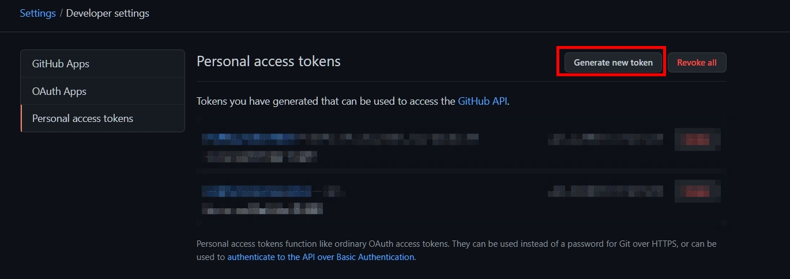
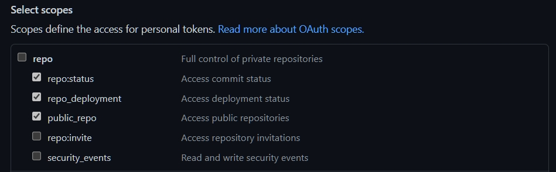

此筆記紀錄筆者Blog網站，使用GitHub Action配置自動佈版程序。
文章內以下單詞語會以簡稱代替
pull_request –> PRGitHub Action –> Action儲存庫最重要分支分別為
main
gh-pages
main分支作為佈版來源套用至此分支，Blog呈現來源是以此分支為基礎呈現。Blog更新規劃步驟如下
main，PR狀態切為closed，由Action進行佈版程序。Generate new token
Note 設定此Token名稱，自己命名可識別名稱。Expiration 設定Token 效期
No expirationSelect scopes 設定此Token權限
repo:status、repo_deployment、public_repo
repo Repository Secret
GITHUBTOKEN secret，並將前面建好GitHub Token設置到此secret。 設定好用到的額外套件配置，在跑Action時，建置環境時會依據此檔案配置安裝所需套件。
Yaml配置檔： github-pr_build.yml
觸發此Action程序時機為PR-opened、PR-reopened，在Check Status區塊可以看到目前Action程序執行狀態。
Yaml配置檔對應為on區塊
on:
pull_request:
types: [opened, reopened]
types 可設定指定PR內事件進行觸發。詳細可以參考 https://docs.github.com/en/actions/learn-github-actions/events-that-trigger-workflows#pull_request
設定只進行Build程序，而不進行佈版，Yaml配置檔對應with區塊，內部參數
token 對應前面設定GitHub Token環節，最後建立Repository Secret - GITHUBTOKEN。build_only 設置為true只進行Build程序，不進行佈版處理。詳細可以參考 https://github.com/marketplace/actions/jekyll-actions#inputs
Yaml配置檔： github-deployment.yml
觸發此Action程序時機為PR-closed，在Check Status區塊可以看到目前Action程序執行狀態。
Yaml配置檔對應為on區塊
on:
pull_request:
types: [closed]
types 可設定指定PR內事件進行觸發。設定進行Build與佈版程序，和前面建立PR事件Action程序差別在於with區塊參數配置，build_only並未設置，只設置以下參數
target_branch 指定佈版目標分支，在這設定為gh-pages。將設定好Yaml檔案在main分支Push上去，在建立自訂分支，依據以下步驟測試執行
gh-pages，此為佈版目標分支。